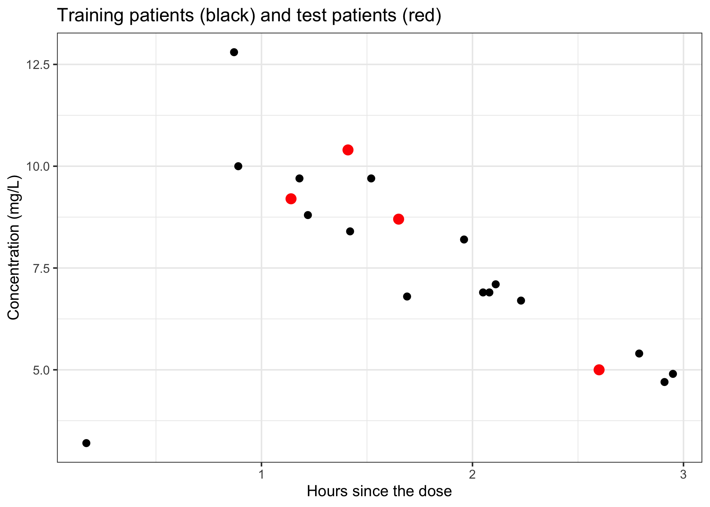

# Packages for this exercise. If one is missing, remove the # and run this line once:
# install.packages(c("tidyverse", "tidymodels"))
library(tidyverse)
library(tidymodels)
theme_set(theme_bw()) # white background for every plotExercise 5.1 — Overfitting and underfitting
A model is only useful if it predicts people it has not seen. So we always compare two errors: on the training rows, which the model was fitted on, and on the test rows, which it has never seen.
- Underfitting: the model is too simple. The error is large on both.
- Overfitting: the model is too flexible. It also learns the noise in the training rows, so the training error is small but the test error is larger.
We will see both with one predictor and three models: a straight line, a gentle curve and a very bendy one.
NoteThe plots are for looking at
The code for every plot is folded away just above it, in case you are curious, and all of it is in the notebook linked at the top of each tab. You are not expected to write it yourself.
Download this exercise as an R Markdown notebook (.Rmd): the text and every code cell of the R version, including the code for the plots, with the blanks left for you to fill in. Open it in RStudio and run it a chunk at a time.
Packages and data
The data are in data/drug_levels.csv: a small pilot study of 20 patients. Each patient had one blood sample taken between 0 and 3 hours after a dose of a drug. hours is the time since the dose and concentration the drug level in the blood (mg/L). As always, 80% of the patients are used for training and 20% are held back as the test set.
drugs <- read_csv("data/drug_levels.csv")
set.seed(42)
split <- initial_split(drugs, prop = 0.8)
train <- training(split)
test <- testing(split)
nrow(train)#> [1] 16nrow(test)#> [1] 416 patients for training and 4 for testing. A small study, which is exactly where overfitting is easiest to fall into.
Part 1 — Look at the data
Code for this plot (optional)
ggplot() +
geom_point(data = train, aes(hours, concentration), size = 2) +
geom_point(data = test, aes(hours, concentration), colour = "red", size = 3) +
labs(x = "Hours since the dose", y = "Concentration (mg/L)",
title = "Training patients (black) and test patients (red)")
Question! Would a straight line describe these points well?
The level rises for about an hour and then falls. A straight line cannot do that.
Part 2 — Three models
All three are linear regressions of concentration on hours. Only the recipe changes. step_poly(hours, degree = 3) turns the one column hours into three columns, built from \(\text{hours}\), \(\text{hours}^2\) and \(\text{hours}^3\), and the extra columns let the fitted line bend. (step_poly also adjusts the three columns a little so they are less alike; the fitted curve is the same.) The higher the degree, the more the line can bend.
See the three columns it makes:
rec_3 <- recipe(concentration ~ hours, data = train) |>
step_poly(hours, degree = 3)
rec_3 |> prep() |> bake(new_data = NULL) |> head(3)#> # A tibble: 3 × 4
#> concentration hours_poly_1 hours_poly_2 hours_poly_3
#> <dbl> <dbl> <dbl> <dbl>
#> 1 12.8 -0.290 0.0365 0.308
#> 2 3.2 -0.520 0.647 -0.462
#> 3 10 -0.284 0.0245 0.310One column has become three. The numbers do not look like hours, hours² and hours³ because of that small adjustment.
Now fit the three models on the training rows: a straight line (degree 1), a gentle curve (degree 3) and a very bendy curve (degree 6).
# Replace every ______ below, then run this cell.
rec_1 <- recipe(concentration ~ hours, data = train) |>
step_poly(hours, degree = 1)
fit_1 <- workflow(rec_1, linear_reg()) |>
fit(data = train)
fit_3 <- workflow(rec_3, linear_reg()) |>
fit(data = train)
rec_6 <- recipe(concentration ~ hours, data = train) |>
step_poly(hours, degree = ______)
fit_6 <- workflow(rec_6, linear_reg()) |>
fit(data = ______)
TipStuck?
The bendy curve has degree 6, and every model is fitted on the training rows only, so data = train.
Part 3 — Training error and test error
For each model we predict the training rows and the test rows, and measure the error with the RMSE: the square root of the mean squared error from Day 3, in the units of the outcome (mg/L). Here is the straight line:
pred_train_1 <- predict(fit_1, new_data = train) |> bind_cols(train)
pred_test_1 <- predict(fit_1, new_data = test) |> bind_cols(test)
train_rmse_1 <- rmse(pred_train_1, truth = concentration, estimate = .pred)$.estimate
test_rmse_1 <- rmse(pred_test_1, truth = concentration, estimate = .pred)$.estimateDo the same for the other two models:
# Replace every ______ below, then run this cell.
pred_train_3 <- predict(fit_3, new_data = train) |> bind_cols(train)
pred_test_3 <- predict(fit_3, new_data = ______) |> bind_cols(______)
train_rmse_3 <- rmse(pred_train_3, truth = concentration, estimate = .pred)$.estimate
test_rmse_3 <- rmse(pred_test_3, truth = concentration, estimate = .pred)$.estimate
pred_train_6 <- predict(fit_6, new_data = train) |> bind_cols(train)
pred_test_6 <- predict(fit_6, new_data = ______) |> bind_cols(______)
train_rmse_6 <- rmse(pred_train_6, truth = concentration, estimate = .pred)$.estimate
test_rmse_6 <- rmse(pred_test_6, truth = concentration, estimate = .pred)$.estimate
TipStuck?
Copy the straight-line cell: the test predictions use the test rows, new_data = test and bind_cols(test).
Part 4 — Compare the three models
All the results in one table:
results <- tibble(
model = c("degree 1", "degree 3", "degree 6"),
train_rmse = c(train_rmse_1, train_rmse_3, train_rmse_6),
test_rmse = c(test_rmse_1, test_rmse_3, test_rmse_6)
)
results#> # A tibble: 3 × 3
#> model train_rmse test_rmse
#> <chr> <dbl> <dbl>
#> 1 degree 1 2.10 1.57
#> 2 degree 3 1.03 0.616
#> 3 degree 6 0.704 1.02And the three fitted curves:
Code for this plot (optional)
hours_grid <- tibble(hours = seq(min(drugs$hours), max(drugs$hours), length.out = 300))
curves <- bind_rows(
predict(fit_1, new_data = hours_grid) |> bind_cols(hours_grid) |> mutate(model = "degree 1"),
predict(fit_3, new_data = hours_grid) |> bind_cols(hours_grid) |> mutate(model = "degree 3"),
predict(fit_6, new_data = hours_grid) |> bind_cols(hours_grid) |> mutate(model = "degree 6")
)
ggplot() +
geom_line(data = curves, aes(hours, .pred), colour = "steelblue", linewidth = 1) +
geom_point(data = train, aes(hours, concentration), size = 2) +
geom_point(data = test, aes(hours, concentration), colour = "red", size = 3) +
facet_wrap(~ model) +
labs(x = "Hours since the dose", y = "Concentration (mg/L)",
title = "Three fitted curves; training patients black, test patients red")
Question! Which model underfits, which overfits, and which would you use?
| Model | Training RMSE | Test RMSE | |
|---|---|---|---|
| degree 1 | 2.10 | 1.57 | underfits: large on both |
| degree 3 | 1.03 | 0.62 | fits: small on both |
| degree 6 | 0.70 | 1.02 | overfits: smallest on training, larger on test |
The straight line misses the rise and fall, so its error is large on both sets. The degree-3 curve follows the shape. The degree-6 curve shoots up to about 13 mg/L before the first hour, to pass through the one high training patient: it has the smallest training error of the three, but on the test patients it is worse than the degree-3 curve. A smaller training error does not mean a better model. Only the test rows can tell.
TipKey points
- Always compare the error on the training rows with the error on the test rows.
- Underfitting: large error on both. The model is too simple.
- Overfitting: small error on training, larger on test. The model has learnt the noise.
- More flexibility always lowers the training error, so the training error cannot choose a model.
Download this exercise as a Jupyter notebook (.ipynb): the text and every code cell of the Python version, including the code for the plots, with the blanks left for you to fill in. Open it in Jupyter or VS Code and run it a cell at a time.
Packages and data
# Packages for this exercise. If one is missing, install it once from a terminal
# (in a Jupyter notebook, type %pip instead of pip):
# pip install pandas numpy matplotlib scikit-learn
import pandas as pd
import numpy as np
import matplotlib.pyplot as plt
from sklearn.model_selection import train_test_split
from sklearn.pipeline import Pipeline
from sklearn.preprocessing import PolynomialFeatures
from sklearn.linear_model import LinearRegression
from sklearn.metrics import root_mean_squared_errorThe data are in data/drug_levels.csv: a small pilot study of 20 patients. Each patient had one blood sample taken between 0 and 3 hours after a dose of a drug. hours is the time since the dose and concentration the drug level in the blood (mg/L). As always, 80% of the patients are used for training and 20% are held back as the test set.
drugs = pd.read_csv("data/drug_levels.csv")
train, test = train_test_split(drugs, test_size=0.2, random_state=42)
print(len(train), len(test))#> 16 416 patients for training and 4 for testing. A small study, which is exactly where overfitting is easiest to fall into.
Part 1 — Look at the data
Code for this plot (optional)
fig, ax = plt.subplots(figsize=(6, 3.5))
ax.scatter(train["hours"], train["concentration"], color="black", s=20)
ax.scatter(test["hours"], test["concentration"], color="red", s=40)
ax.set_xlabel("Hours since the dose")
ax.set_ylabel("Concentration (mg/L)")
ax.set_title("Training patients (black) and test patients (red)")
plt.show()
Question! Would a straight line describe these points well?
The level rises for about an hour and then falls. A straight line cannot do that.
Part 2 — Three models
All three are linear regressions of concentration on hours. Only the first step of the pipeline changes. PolynomialFeatures(degree=3, include_bias=False) turns the one column hours into three columns, \(\text{hours}\), \(\text{hours}^2\) and \(\text{hours}^3\), and the extra columns let the fitted line bend. The higher the degree, the more the line can bend.
See the three columns it makes for the first three training patients:
X_train, y_train = train[["hours"]], train["concentration"]
X_test, y_test = test[["hours"]], test["concentration"]
PolynomialFeatures(degree=3, include_bias=False).fit_transform(X_train)[:3].round(2)#> array([[ 2.11, 4.45, 9.39],
#> [ 1.22, 1.49, 1.82],
#> [ 2.6 , 6.76, 17.58]])Now fit the three models on the training rows: a straight line (degree 1), a gentle curve (degree 3) and a very bendy curve (degree 6).
# Replace every ______ below, then run this cell.
fit_1 = Pipeline([("poly", PolynomialFeatures(degree=1, include_bias=False)),
("linreg", LinearRegression())])
fit_1.fit(X_train, y_train)
fit_3 = Pipeline([("poly", PolynomialFeatures(degree=3, include_bias=False)),
("linreg", LinearRegression())])
fit_3.fit(X_train, y_train)
fit_6 = Pipeline([("poly", PolynomialFeatures(degree=______, include_bias=False)),
("linreg", LinearRegression())])
fit_6.fit(______, y_train)
TipStuck?
The bendy curve has degree 6, and every model is fitted on the training rows only, so X_train.
Part 3 — Training error and test error
For each model we predict the training rows and the test rows, and measure the error with the RMSE: the square root of the mean squared error from Day 3, in the units of the outcome (mg/L). Here is the straight line:
train_rmse_1 = root_mean_squared_error(y_train, fit_1.predict(X_train))
test_rmse_1 = root_mean_squared_error(y_test, fit_1.predict(X_test))Do the same for the other two models:
# Replace every ______ below, then run this cell.
train_rmse_3 = root_mean_squared_error(y_train, fit_3.predict(X_train))
test_rmse_3 = root_mean_squared_error(______, fit_3.predict(______))
train_rmse_6 = root_mean_squared_error(y_train, fit_6.predict(X_train))
test_rmse_6 = root_mean_squared_error(______, fit_6.predict(______))
TipStuck?
Copy the straight-line cell: the test RMSE compares y_test with the predictions for X_test.
Part 4 — Compare the three models
All the results in one table:
results = pd.DataFrame({
"model": ["degree 1", "degree 3", "degree 6"],
"train_rmse": [train_rmse_1, train_rmse_3, train_rmse_6],
"test_rmse": [test_rmse_1, test_rmse_3, test_rmse_6],
})
print(results.round(2))#> model train_rmse test_rmse
#> 0 degree 1 2.15 1.28
#> 1 degree 3 1.04 0.65
#> 2 degree 6 0.63 1.37And the three fitted curves:
Code for this plot (optional)
hours_grid = pd.DataFrame({"hours": np.linspace(drugs["hours"].min(), drugs["hours"].max(), 300)})
fig, axes = plt.subplots(1, 3, figsize=(10, 3.5), sharey=True)
for ax, model, name in zip(axes, [fit_1, fit_3, fit_6], ["degree 1", "degree 3", "degree 6"]):
ax.plot(hours_grid["hours"], model.predict(hours_grid), color="steelblue", linewidth=2)
ax.scatter(train["hours"], train["concentration"], color="black", s=20)
ax.scatter(test["hours"], test["concentration"], color="red", s=40)
ax.set_title(name)
ax.set_xlabel("Hours since the dose")
axes[0].set_ylabel("Concentration (mg/L)")
fig.suptitle("Three fitted curves; training patients black, test patients red")
plt.tight_layout()
plt.show()
Question! Which model underfits, which overfits, and which would you use?
| Model | Training RMSE | Test RMSE | |
|---|---|---|---|
| degree 1 | 2.15 | 1.28 | underfits: large on both |
| degree 3 | 1.04 | 0.65 | fits: small on both |
| degree 6 | 0.63 | 1.37 | overfits: smallest on training, larger on test |
The straight line misses the rise and fall, so its error is large on both sets. The degree-3 curve follows the shape. The degree-6 curve shoots up to about 16 mg/L before the first hour, to pass through the one high training patient: it has the smallest training error of the three, but on the test patients it is worse than the degree-3 curve. A smaller training error does not mean a better model. Only the test rows can tell.
TipKey points
- Always compare the error on the training rows with the error on the test rows.
- Underfitting: large error on both. The model is too simple.
- Overfitting: small error on training, larger on test. The model has learnt the noise.
- More flexibility always lowers the training error, so the training error cannot choose a model.